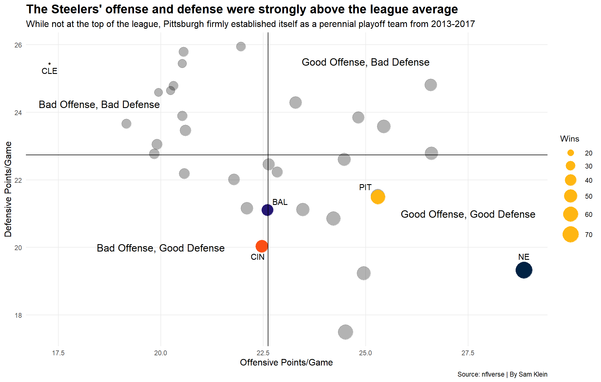

The Pittsburgh Steelers are one of the most storied franchises in the NFL, with their 6 Super Bowls tying the Patriots for the most in the league. In recent years, however, the Steelers have taken a notable downturn. Their last Super Bowl win was in 2008, their last Super Bowl appearance was in 2010, and their last playoff win was in 2016. In Pittsburgh, the standard is Super Bowls, and the organization simply isn’t maintaining that standard.
This isn’t to stay that the Steelers haven’t had their chances. Since their last Super Bowl appearance in 2010, the Steelers have reached the playoffs in 9 out of 14 years. The Steelers won the competitive AFC North in 4 of those years, with 3 titles from 2013-2017.
This period is crucial. In the NFL - or any professional sports league for that matter - championship windows come and go quickly. An organization needs to recognize when they have a team capable of winning it all so that they can go all-in to ensure the team accomplishes its goal.
So what was so different about these 5 years?
Enter “The Killer B’s”, the extremely potent offensive trio of quarterback Ben Roethlisberger, running back Le’Veon Bell, and wide receiver Antonio Brown.
When this trio took the field, they were borderline unstoppable, and their accolades proved it. From 2013-2017, Roethlisberger, Bell, and Brown earned a combined 6 first-team All-Pro selections - for reference, the highly-regarded Cowboys’ “Triplets” earned a combined 5 first-team All-Pro selections in 10 seasons. The Killer B’s weren’t just insanely good - they were historically good.
Needless to say, The Killer B’s were head and shoulders above the rest in yards from 2013-2017.
Football isn’t basketball - a team needs more than a couple of superstars to carry them over the hump and, importantly, there’s still a whole other phase of the game to consider.
The Steelers defense from 2013-2017 isn’t as flashy. In the same span that The Killer B’s had 6 combined first-team All-Pro selections, the Steelers’ defense had ONE: Cameron Heyward in 2017. Surely, this lack of production on the defensive side would hold them back, right?
Code
set.seed(69)team_stats <-calculate_stats(seasons =2013:2017,summary_level ="week",stat_type ="team",season_type ="REG+POST")team_box <- team_stats |>mutate(team_score = passing_tds*6+ rushing_tds*6+ special_teams_tds*6+ def_tds*6+ fumble_recovery_tds*6+ fg_made*3+ pat_made + def_safeties*2+ passing_2pt_conversions*2+ rushing_2pt_conversions*2,new_passing_yards = passing_yards+sack_yards_lost,total_yards = new_passing_yards+rushing_yards)#write_csv(team_box, "data/team_box_nfl.csv")team_box <-read.csv("data/team_box_nfl.csv")team_summary <- team_box |>group_by(team) |>summarise(offppg =mean(team_score),defppg =mean(opponent_score),wins =sum(result =="W"))steelers <- team_summary |>filter(team =="PIT")ravens <- team_summary |>filter(team =="BAL")bengals <- team_summary |>filter(team =="CIN")browns <- team_summary |>filter(team =="CLE")patriots <- team_summary |>filter(team =="NE")teams <-c("PIT", "BAL", "CLE", "CIN", "NE")legend_teams <- team_summary |>filter(!team %in% teams)mean_offppg <-mean(team_summary$offppg)mean_defppg <-mean(team_summary$defppg)ggplot() +geom_point(data = team_summary,aes(x = offppg,y = defppg,size = wins ),color ="black",alpha = .3 ) +geom_point(data = ravens,aes(x = offppg, y = defppg, size = wins),color ="#241773" ) +geom_point(data = bengals,aes(x = offppg, y = defppg, size = wins),color ="#FB4F14" ) +geom_point(data = browns,aes(x = offppg, y = defppg, size = wins),color ="#311D00" ) +geom_point(data = patriots,aes(x = offppg, y = defppg, size = wins),color ="#002244" ) +geom_point(data = steelers,aes(x = offppg, y = defppg, size = wins),color ="#FFB612" ) +geom_text(data = steelers,aes(x = offppg - .3, y = defppg + .3, label = team),show.legend =FALSE ) +geom_text(data = ravens,aes(x = offppg + .3, y = defppg + .25, label = team),show.legend =FALSE ) +geom_text(data = bengals,aes(x = offppg - .1, y = defppg - .3, label = team),show.legend =FALSE ) +geom_text(data = browns,aes(x = offppg, y = defppg - .2, label = team),show.legend =FALSE ) +geom_text(data = patriots,aes(x = offppg, y = defppg + .4, label = team),show.legend =FALSE ) +geom_text(data =NULL, aes(x =27.5, y =21, label ="Good Offense, Good Defense", size =25, face ="bold"),show.legend =FALSE ) +geom_text(data =NULL, aes(x =25, y =25.5, label ="Good Offense, Bad Defense", size =25, face ="bold"),show.legend =FALSE ) +geom_text(data =NULL, aes(x =20, y =20, label ="Bad Offense, Good Defense", size =25, face ="bold"),show.legend =FALSE ) +geom_text(data =NULL, aes(x =18.5, y =24.25, label ="Bad Offense, Bad Defense", size =25, face ="bold"),show.legend =FALSE ) +geom_vline(xintercept = mean_offppg) +geom_hline(yintercept = mean_defppg) +scale_size(range =c(1, 10), name ="Wins") +labs(x ="Offensive Points/Game",y ="Defensive Points/Game",title ="The Steelers' offense and defense were strongly above the league average",subtitle ="While not at the top of the league, Pittsburgh firmly established itself as a perennial playoff team from 2013-2017",caption ="Source: nflverse | By Sam Klein" ) +theme_minimal() +theme(plot.title =element_text(size =16, face ="bold"),axis.title =element_text(size =12),plot.subtitle =element_text(size =12),panel.grid.minor =element_blank() )
Warning in geom_text(data = NULL, aes(x = 27.5, y = 21, label = "Good Offense,
Good Defense", : Ignoring unknown aesthetics: face
Warning in geom_text(data = NULL, aes(x = 25, y = 25.5, label = "Good Offense,
Bad Defense", : Ignoring unknown aesthetics: face
Warning in geom_text(data = NULL, aes(x = 20, y = 20, label = "Bad Offense,
Good Defense", : Ignoring unknown aesthetics: face
Warning in geom_text(data = NULL, aes(x = 18.5, y = 24.25, label = "Bad
Offense, Bad Defense", : Ignoring unknown aesthetics: face

Surprisingly, the defense… wasn’t the issue. Although the Steelers’ divisional foes - other than the abysmal Browns - held their opponents to fewer points per game, the Steelers’ offensive output more than compensated, and their defense still performed above the average.
Notably, the Patriots posted the best offense and third-best defense in this span. Perhaps the Steelers’ lack of success could be chalked up to competing against a dynasty.
There is a slight problem with this theory - the Steelers only met the Patriots ONCE during the postseason from 2013-2017, where they were thoroughly demolished in the 2016 AFC Championship game.
So, if the Steelers didn’t run into the buzzsaw that was the Patriots, then what’s up with the lack of Super Bowl appearances and titles?
Scheming and game-planning can only take you so far. At some point, teams need talent to elevate them to new heights, and it quickly became clear that the Steelers just didn’t have enough talent on defense.
The Steelers played 7 postseason games from 2013-2017 and, unfortunately, their defense didn’t show up like it had in the regular season for many of those games.
Code
reg_post <- team_box |>group_by(team, season_type) |>summarise(offppg =mean(team_score),defppg =mean(opponent_score) ) |>pivot_wider(names_from = season_type, values_from =c(offppg, defppg))postseason <- reg_post |>filter(offppg_POST !=is.na(offppg_POST), defppg_POST !=is.na(defppg_POST)) |>arrange(defppg_REG)mean_defppg_REG <-mean(postseason$defppg_REG)mean_defppg_POST <-mean(postseason$defppg_POST)overachieved <- postseason |>filter(defppg_POST < defppg_REG)steelers <- postseason |>filter(team =="PIT")ggplot(postseason, aes(y =reorder(team, defppg_REG, decreasing =TRUE))) +geom_segment(aes(yend = team, x = defppg_POST, xend = defppg_REG), color ="red") +geom_segment(data = overachieved, aes(, yend = team, x = defppg_POST, xend = defppg_REG), color ="green") +geom_segment(data = steelers, aes(, yend = team, x = defppg_POST, xend = defppg_REG), color ="red", size =1.5) +geom_point(data = postseason, aes(x = defppg_POST), color ="gold", size =2.5) +geom_point(data = postseason, aes(x = defppg_REG), color ="black", size =2.5) +geom_point(data = steelers, aes(x = defppg_REG), color ="black", size =5) +geom_point(data = steelers, aes(x = defppg_POST), color ="gold", size =5) +geom_vline(xintercept = mean_defppg_REG, color ="black") +geom_vline(xintercept = mean_defppg_POST, color ="gold") +geom_text(data =NULL, aes(x =27, y ="KC", label ="Postseason Average")) +geom_text(data =NULL, aes(x =19.5, y ="NO", label ="Regular Season Average")) +theme_minimal() +labs(x ="Defensive Points/Game",y ="Team",title ="The Steelers' defense performed worse in the playoffs",subtitle ="Their opponents scored around 4 PPG more in the <span style='color:gold;'>**postseason**</span> than the <span style='color:black'>**regular season**</span> from 2013-2017",caption ="Source: nflverse | By Sam Klein" ) +theme(legend.position ="none",plot.title =element_text(size =16, face ="bold"),plot.subtitle =element_textbox_simple(size =12),axis.title =element_text(size =12),panel.grid.minor =element_blank() )
Four points are critical in playoff games, where many come down to game-winning field goals or last-second miracle plays. The defense that performed above the regular season average for points per game fell below the postseason average.
The most egregious instance of the defense underperforming was in the 2017 playoffs, where the hosting Steelers allowed a Blake Bortles-led Jaguars team to score 45 points in a massive upset.
It wasn’t known at the time, but this game marked the end of the Killer B’s era. Bell held out in 2018 before signing with the Jets in 2019, while Brown played one more season in Pittsburgh before forcing his way out in 2019. Bell and Brown’s departures left an aging Roethlisberger in control of a severely depleted offense, and the Steelers’ Super Bowl window was effectively closed.
The years since haven’t been kind to the Steelers, who are still searching for their first playoff win in the post-Killer B’s era. As the decade mark approaches, fans are left wondering if the Steelers will remain an NFL staple or if they will slip ever further into mediocrity.